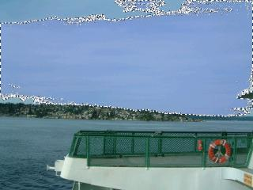

Magic Wand
The Magic Wand tool allows you to select areas of color similar to the way the other selection tools allow you to select a given shape. Unlike the other selection tools, however, the Magic Wand tool takes into consideration factors such as the actual content of the image and the current tolerance setting. In many cases, all that needs to be done to select a given area of the image is to simply click on it.
You may think of the Magic Wand as working similarly to the Paint Bucket, except that instead of filling the area with color it will select that area.
Tolerance
Similar to the Paint Bucket tool, Magic Wand's results can be adjusted by tuning the tolerance. The effect of adjusting the tolerance value is shown below:
|  |

|
|||||
| Magic Wand with tolerance set to 25%. The selection doesn't capture enough of the image: the tolerance is too low. | Magic Wand with tolerance set to 50%. The selection captures too much of the image: the tolerance is too high. | |||||

|
||||||
| Magic Wand with a tolerance value of 31%. The selection properly captures the area of interest, no more, no less. | ||||||
Advanced Use
Selection Building
Sometimes it is not possible to select a given region using only one click. Frequently, getting just the right selection can be difficult when the desired area is not near one solid color. To make selections like this, it works well to repeatedly use the Magic Wand with a low tolerance value, extending the selection each time to capture slightly more of the desired region with each click.

|

|
|||
| Magic wand being used multiple times, extending the selection each time by clicking a new area while holding Ctrl. | ||||
Selection By Exclusion
It also works well to make a basic selection with a tool such as the lasso tool, then use Magic Wand to refine the selection. This method is particularly effective when the subject is identified by the lack of fine detail outside of a given region.

|

|
||||
| An initial selection is made using the lasso tool, then the Magic Wand tool is used to exclude the area that is not intended to be selected by clicking in the region to exclude with the right mouse button. | |||||
Global Selections
The Magic Wand normally limits the selection to only include the areas of the image that are touching and are of a similar enough color. It is possible, however, to make a selection based only on color, ignoring all boundaries and requirements for contiguity. This can be accomplished by simply holding Shift while performing any of the other Magic Wand tasks (including selection subtraction and extension).

|
||
| This selection was made by performing a Select All (Edit → Select All), then holding Shift while right clicking to exclude all black areas of the image. Note that many disconnected areas of black have been deselected. |
Copyright © 2007
Rick Brewster, Tom Jackson, and past contributors. Portions Copyright
© 2007 Microsoft Corporation. All Rights
Reserved.